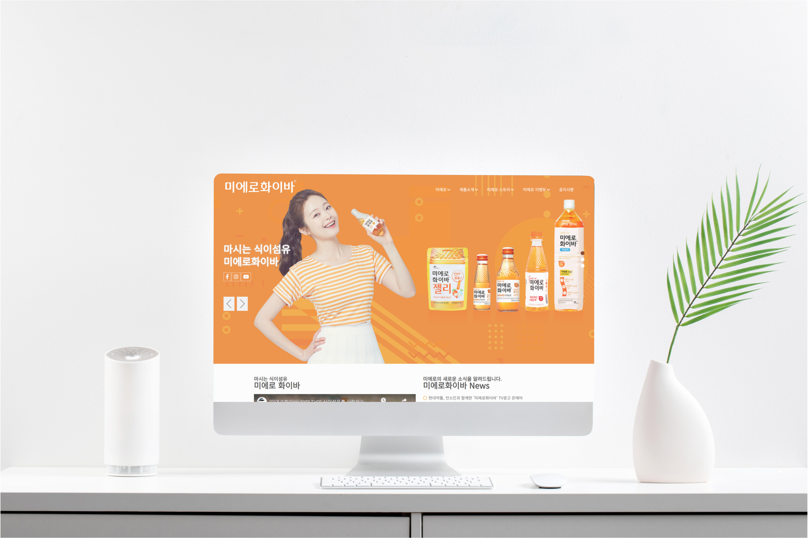

미에로화이바 pc 리뉴얼 프로젝트

24.03.11 - 24.03.18개인 프로젝트적용될
- 프로젝트 개요
- pc버전 웹사이트 리뉴얼 제작
- 프로젝트 목적
- 그리드 레이아웃 제작
- JavaScript의 effect, event 메서드 활용
- 사용 언어
- HTML, CSS, JavaScript, jQuery
- 주요 기능
- 메인 페이지 상단 배너 - 자동 슬라이드, 내비게이션 버튼 기능 구현
- 탭메뉴 기능 구현
- 아코디언 기능 구현
- 이벤트 - 자동 슬라이드 기능 구현
- 느낀 점
- 그리드 레이아웃을 적용하여 개성있는 웹사이트를 만들어봄
- 다양하게, 열심히 배워서 더 attractive한 웹사이트를 만들고 싶음
캐논아카데미 홈페이지(사용자) 리뉴얼 프로젝트

2023.04.27 ~ 2023.05.19팀 프로젝트MOBILE버전
- 프로젝트 개요
- 학습자를 위한 MOBILE에 최적화된 LMS(학습지원시스템) 웹 사이트 개발
- 프로젝트 목적
- 페르소나 설정을 통해 UI/UX분석 경험
- 학습자용 정보구조, 화면구조, 데이터베이스 설계 경험
- PHP, SQL 데이터베이스를 사용한 장바구니 기능 구현
- 오픈 라이브러리와 API 사용 경험
- 사용 언어
- HTML, CSS, SASS, JavaScript, jQuery, PHP, MySQL
- 맡은 역할·기능
- 기획 - CPM, WBS 스케줄관리, 문서작업, 페르소나, 기획의도 벤치마킹, 개선방향 및 전반적인 PPT 작업, 정보구조설계, 와이어프레임, 스토리보드, 데이터베이스 설계
- 디자인 - 90%이상 디자인 전체 담당 / PPT 디자인
- 개발 - 기능정의서 작성, 내비게이션, 캐논아카데미 소개 페이지, 커리큘럼페이지, 마이페이지 개발
- 느낀 점
- 게시판 글쓰기와 챗봇 기능을 구현하며 다양한 라이브러리와 API 사용법을 배움
- 기획과 디자인을 대부분 맡아서 진행해보니 사용자 입장에서 필요한 기능 및 UX적인 부분을 많이 고민하게 됐으며 이로인해 성장하게 됨
사용자 ID : qwer, PASS : 1234
Figma Prototype - 사용자캐논아카데미 홈페이지(관리자) 리뉴얼 프로젝트

2023.03.28 ~ 2023.04.18팀 프로젝트PC버전
- 프로젝트 개요
- 관리자를 위한 PC에 최적화된 LMS(학습지원시스템) 웹 사이트 개발
- 프로젝트 목적
- 관리자용 정보구조, 화면구조, 데이터베이스 설계 경험
- 관계형 데이터베이스 경험
- 오픈 API 사용 경험
- 사용 언어
- HTML, CSS, JavaScript, jQuery, PHP, MySQL
- 맡은 역할·기능
- 기획 - 기획 전체 :CPM, WBS 스케줄관리, 각종 문서작업, 페르소나, 기획의도, 벤치마킹, 개선방향, 전반적인 PPT 작업, 정보구조설계, 와이어프레임, 데이터베이스 설계
- 디자인 - 디자인 전체, 디자인 프로토타이핑, PPT 디자인, figma 디자인 프로토타이핑
- 개발 - 메인페이지 달력, 강의 리스트
- 느낀 점
- 사용자의 UX/UI를 고려함과 동시에 페이지에 실제로 적용될 수 있는 요소를 활용하여 관리자 입장에서 활용하기 용이하게 만듦
-
디자인에 있어 디테일에 집착해 속도가 늦어진 점이 아쉬웠음
사소한 디테일은 나중에 잡고 효율적으로 진행하는 방법을 깨달음
관리자 ID : admin, PASS : admin
Figma Prototype - 관리자하나금융지주 홈페이지 리뉴얼 프로젝트

2023.02.06 ~ 2023.03.15팀 프로젝트적응형
- 프로젝트 개요
- 시가총액 100대 기업 중 한 곳을 선정하여 기존 홈페이지를 적응형 웹으로 리뉴얼
- 프로젝트 목적
- 적응형 웹 제작 능력 함양
- Git, GitHub를 통한 형상관리, 협업 경험
- PHP, SQL 데이터베이스를 사용한 데이터 입력, 출력 경험
- meta tag를 통한 SEO(검색엔진 최적화) 경험
- 사용 언어
- HTML, CSS, JavaScript, jQuery, PHP, MySQL
- 맡은 역할·기능
- 기획 - SWOT 분석, 자사 및 경쟁사 사이트 분석, 벤치마킹, 정보구조설계, WBS 작성, CPM 네트워크
- 디자인 - 스타일가이드, pc 메인, 서브디자인, mobile 메인 디자인, ppt 디자인, figma 프로토타입
- 개발 - 로그인, 회원가입 php 페이지 / 모바일 슬라이드, 메인
- 느낀 점
- 기획자, 디자이너의 요구대로 구현하기 위해 여러번 회의를 하며 소통 능력을 키움
- GitHub를 통해 협업하며 버전 관리의 중요성을 느낌
- MySQL로 테이블을 만들고 PHP로 데이터를 수집, 출력하며 데이터베이스에 대해 이해하게 됨
LG생활건강 홈페이지 리뉴얼 프로젝트

2023.02.08 ~ 2023.02.15개인 프로젝트반응형
- 프로젝트 개요
- 선호하는 브랜드를 선정하여 기존 홈페이지를 반응형 웹으로 리뉴얼
- 프로젝트 목적
- 반응형 웹 제작 능력 함양
- 영상이 들어간 슬라이드 배너 제작
- JavaScript의 effect, event 메서드 활용
- 사용 언어
- HTML, CSS, JavaScript, jquery
- 주요 기능
- PC/ TABLET / MOBILE 반응형 레이아웃 제작
- 메인 슬라이드에 영상 세개 넣어서 제작
- 멀티플 슬라이드 제작
- JavaScript, jquery로 동적인 웹사이트 제작
- 느낀 점
- 혼자 개발하는 과정에서 스스로 문제점을 찾고 해결하며 뿌듯함을 느낌
- JavaScript로 여러 효과를 구현하며 응용 하는 능력을 키움
TGI FRIDAYS 홈페이지 리뉴얼 프로젝트

2022.12.20 ~ 2023.01.20팀 프로젝트반응형
- 프로젝트 개요
- 홍보가 필요한 브랜드를 선정하여 기존 홈페이지를 트렌드에 맞게 반응형 웹으로 리뉴얼
- 프로젝트 목적
- 반응형 웹 제작 능력 함양
- 팀원들과의 협업 경험으로 커뮤니케이션 능력 향상
- JavaScript를 사용하여 다양한 슬라이드 구현
- 디바이스별 테스트, 웹 표준 검사, 크로스 브라우징, 접근성 검사 경험
- 사용 언어
- HTML, CSS, JavaScript, jQuery
- 맡은 역할·기능
- 기획 - 기획의 처음부터 끝까지 100% 참여
- 디자인 - 홍보배너, 로고 직접 포토샵으로 제작 / 전반적인 디자인을 맡음
- 개발 - 메인페이지 슬라이드 배너 개발 / 반응형 레이아웃 구성 / SNS 스크롤슬라이드 개발 / 푸터 개발
- 느낀 점
- 처음으로 기획부터 개발까지 모든 프로세스를 경험하며 팀원들과 소통하는 방법을 배움
- css와 JavaScript 선택자를 적절히 사용하여 효율적으로 코딩하는 방법을 깨달음
-
미에로화이바 pc 리뉴얼 프로젝트
-
캐논아카데미 홈페이지(사용자) 리뉴얼 프로젝트
-
캐논아카데미 홈페이지(관리자) 리뉴얼 프로젝트
-
하나금융지주 홈페이지 리뉴얼 프로젝트
-
LG생활건강 홈페이지 리뉴얼 프로젝트
-
TGI FRIDAYS 홈페이지 리뉴얼 프로젝트